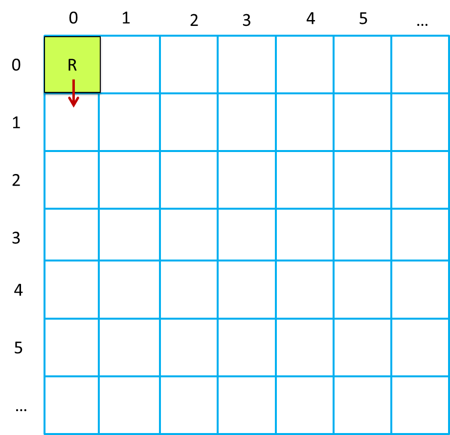
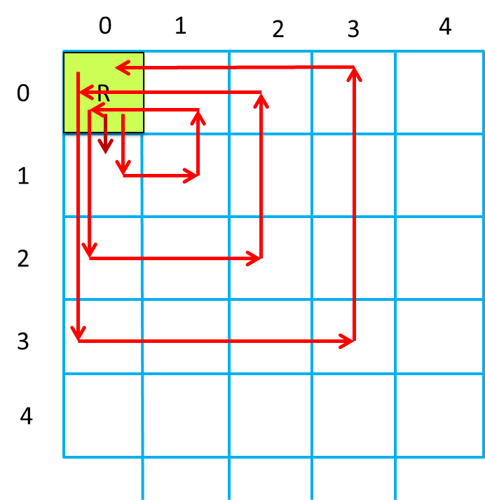
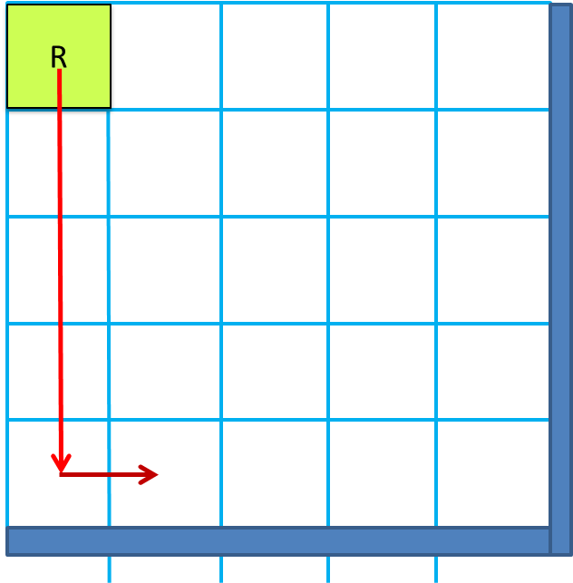

72939 - LAB16 | Exploiting Planning Tools
LabISS-lectures site
Overview
In many ddr-robot applications, there is the need to discovery the topology of the floor and to define test plans to check
that the robot covers all the free-areas of the floor.
In these applications, the robot control software could logically operate in two phases (
plan-first/schedule later,
sez.
11.1 of
AIBook):
- first, the robot detects (by using a planner) a proper sequence of moves according its current position
and the current state of the world (the room in which it is working. This phase col
- next, the robot actuates the move sequence, with the caution the the execution of a basicStep
can works also as a 'discovery action' that could lead to the interruption of the sequence for the presence of a (fixed or mobile) obstacle.
To promote the development of plan-based applications, it is wise to encapsulate the planning activity into a specialized component,
named, from now on, 'the
planner'. At this level of analysis, the details of the behavior of the planner can be ignored.
In fact, we will exploit a set of available supports built upon the
AIMA3e-Java
library:
AIMA library
AIMA3e-Java
In particular, the Best-first search algorithm (sez. 3.5.2 of the book) as a support for search-based problem-solving agents:
AStarSearch
|
Java implementation of algorithms from:
AIBook
Russell and Norvig: Artificial Intelligence - A Modern Approach 3rd Edition.
|
The application supports for planning
In the project
it.unibo.eclipse.qak.planning19, we introduce two main supports for planning the actions of a robot
working in logical space (a
map) composed of a set of square cells, each large as the robot:
The logical move-space
The robot is supposed to be a square device, large as a cell.
|

|
plannerUtil.kt
Example:mindwithplanner.qak

setGoal 2,2
plannerUtil doPlan actions=[a, w, w, a, w, w]
MAP AFTER EXPLORE STEP
| 1, 1,
| 1, 1,
| 1, 1, r,
|
plannerUtil
The singleton object named plannerUtil provides a set of static methods, including:
- initAI( ): initializes the planner with a BreadthFirstSearch algorithm, assuming a robot in position
cell(0,0,1), direction=sud (see the picture above).
The possible robot directions are: sud | east | north | west.
- setGoal( x: String, y: String ): sets cell(x,y,_) as the goal to reach.
- doPlan(): List?: returns the list of actions to reach the goal-cell.
The possible robot directions are: w | a | s | d (however, s is never selected by the planner).
- doMove( move : String): modifies the state of the map according to the given move.
- showMap(( ): prints the current state of the map
|
moveUtils.kt.
Example:mindexplore.qak (the same strategy of the example above)
Example:mindbutler.qak

The robot attempts to delimit its working area bay finding the (position of the) walls.
|
moveUtils
The singleton object named moveUtils acts as an adapter for a ActorBasic actor, by providing a set of static methods, including:
- doPlan(actor : ActorBasic ): calls plannerUtil.doPlan() and stores the resulting moves in the kb of the
given actor in the form move( M ) with M = a | w | d.
- setPosition(actor : ActorBasic):
sets in the kb of the given actor its current position in the form curPos(X,Y ).
- setDirection(actor : ActorBasic):
sets in the kb of the given actor its current directiuon in the form direction( D )
- doPlannedMove(actor : ActorBasic, move: String): calls plannerUtil.doMove( move ) and
sets in the kb of the given actor its current direction in the form direction( D ).
|
An example
The application designer usually works by exploiting the utility
moveUtils.kt. For example:
|
|
Model: planex0.qak
This model can be executed without any robot
setGoal 2,2
plannerUtil doPlan actions=[w, w, a, w, w]
|

|
MAP after step 0
|1,
|1,
|1, 1, r,
Going to (1,1) from (2,2)
setGoal 1,1
plannerUtil doPlan actions=[a, w, a, w]
MAP after step 1
|1,
|1, r, 1,
|1, 1, 1,
FINAL MAP
|1,
|1, r, 1,
|1, 1, 1,
|